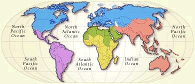

|  Select a region by clicking on the map Delineation of national boundaries are for reference purposes, and do not represent an endorsement by the World Heritage Committee, UNESCO, or any UN agency. |
|
|

Africa | Arab states | America and Europe | Latin America | Asia and Oceania |